| Mål | Beskrivning | Progression |
|---|---|---|
| 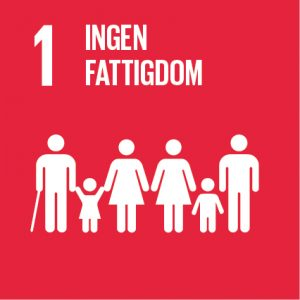 | Fattigdom omfattar fler dimensioner än den ekonomiska. Fattigdom innebär bl.a. även brist på frihet, makt, inflytande, hälsa, utbildning och fysisk säkerhet. | 100% |
| 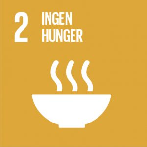 | Avskaffa hunger, uppnå tryggad livsmedelsförsörjning och förbättrad nutrition samt främja ett hållbart jordbruk | 61% |
| 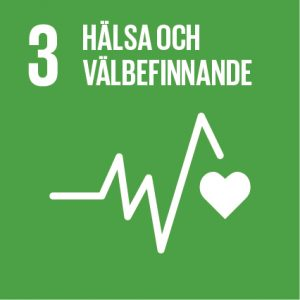 | Säkerställa hälsosamma liv och främja välbefinnande för alla i alla åldrar | 67% |
| 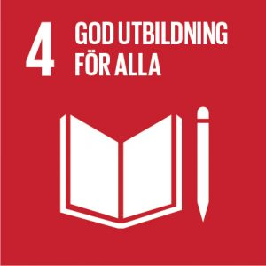 | Säkerställa en inkluderande och likvärdig utbildning av god kvalitet och främja livslångt lärande för alla | 75% |
| 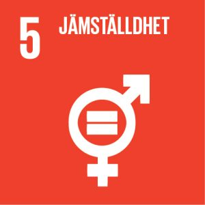 | Uppnå jämställdhet och alla kvinnors och flickors egenmakt | 50% |
| 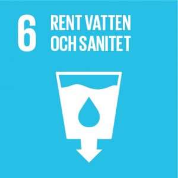 | Säkerställa tillgången till och en hållbar förvaltning av vatten och sanitet för alla | 61% |
| 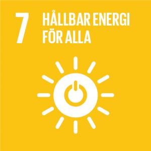 | Säkerställa tillgång till ekonomiskt överkomlig, tillförlitlig, hållbar och modern energi för alla | 34% |
| 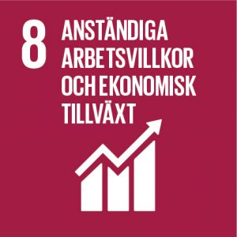 | Verka för varaktig, inkluderande och hållbar ekonomisk tillväxt, full och produktiv sysselsättning med anständiga arbetsvillkor för alla | 48% |
| 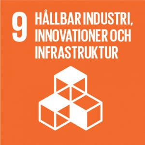 | Bygga motståndskraftig infrastruktur, verka för en inkluderande och hållbar industrialisering samt främja innovation | 80% |
| 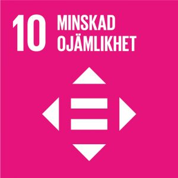 | Minska ojämlikheten inom och mellan länder | 75% |
| 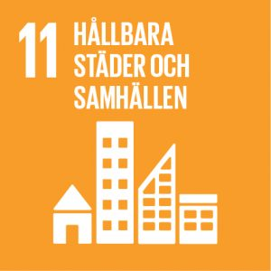 | Göra städer och bosättningar inkluderande, säkra, motståndskraftiga och hållbara | 50% |
| 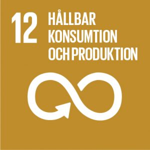 | Säkerställa hållbara konsumtions- och produktionsmönster | 25% |
| 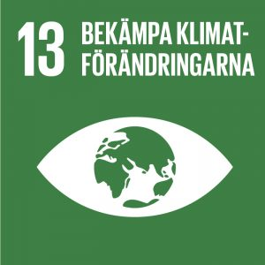 | Med beaktande av att Förenta nationernas ramkonvention om klimatförändringar är det främsta internationella, mellanstatliga forumet för förhandlingar om hur världen ska hantera klimatförändringarna. | 45% |
| 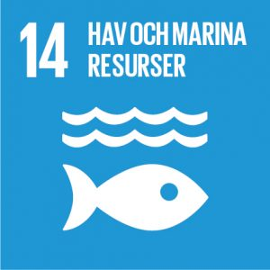 | Bevara och nyttja haven och de marina resurserna på ett hållbart sätt för en hållbar utveckling | 60% |
| 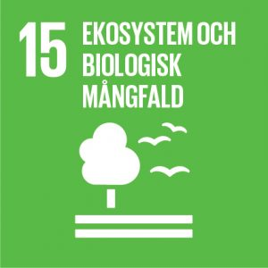 | Skydda, återställa och främja ett hållbart nyttjande av landbaserade ekosystem, hållbart bruka skogar, bekämpa ökenspridning, hejda och vrida tillbaka markförstöringen samt hejda förlusten av biologisk mångfald | 90% |
| 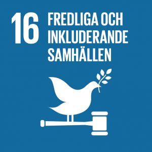 | Främja fredliga och inkluderande samhällen för hållbar utveckling, tillhandahålla tillgång till rättvisa för alla samt bygga upp effektiva, och inkluderande institutioner med ansvarsutkrävande på alla nivåer | 55% |
| 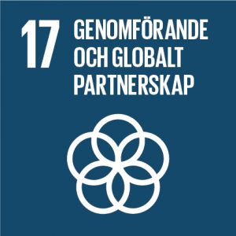 | Stärka genomförandemedlen och återvitalisera det globala partnerskapet för hållbar utveckling | 35% |